Predio privado
Nada a compartir con otros huéspedes. La casa, el quincho, el patio y la pileta son para tu grupo.
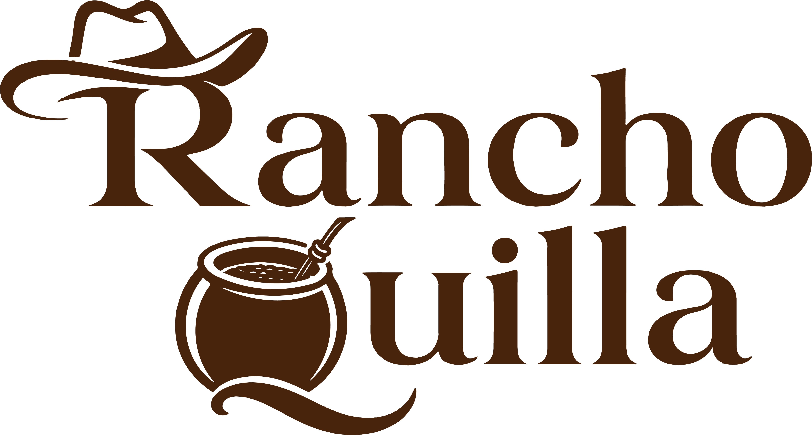
Dique Cabra Corral · Salta
Rancho Quilla es una casa grande de campo para hasta 12 personas, con quincho, pileta, piletín para niños, asadores y una experiencia totalmente privada a la orilla del dique.
CASA DE CAMPO PRIVADA PARA DESCANSAR, COMPARTIR Y VIVIR EL DIQUE
Pensada para familias y grupos de amigos que buscan alquiler de cabaña o casa en Salta con privacidad real. El predio no se comparte: quincho, pileta, patio, asadores y espacios de descanso quedan disponibles solo para quienes reservan.
El estilo es bien de campo: ladrillo, piedra, madera, hogar a leña, cocina equipada y rincones preparados para largas sobremesas, asados, juegos y descanso cerca del agua.
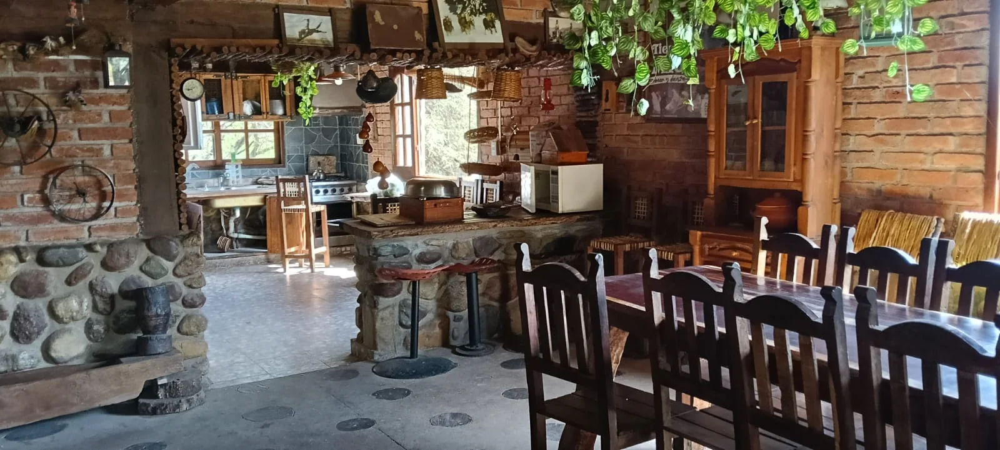
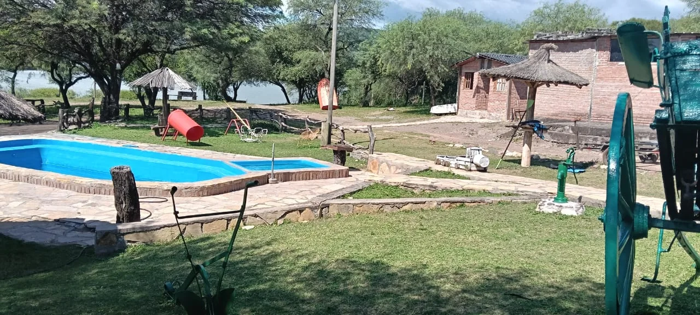
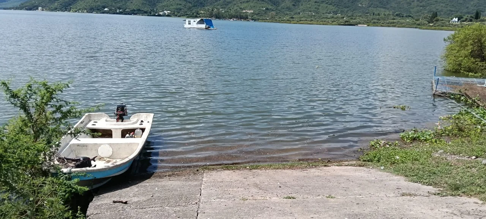
Comodidades, actividades y detalles pensados para que la estadía sea simple, completa y sin vueltas.
Nada a compartir con otros huéspedes. La casa, el quincho, el patio y la pileta son para tu grupo.
Heladera, freezer, utensilios y equipamiento de cocina para organizar comidas para hasta 12 personas.
Horno de barro, asadores y patio de cancana para preparar costillar a la estaca o comidas al fuego.
Incluye dos kayaks o un bote doble para pesca o navegación, sujeto a condiciones del dique y uso responsable.
TV 50 pulgadas con DIRECTV, metegol, pool y ping pong para disfrutar también dentro de la casa.
Podés consultar por tu mascota al reservar. La idea es que viaje toda la familia.
El diferencial de Rancho Quilla no es solo dormir: es juntarse, cocinar, jugar, navegar, mirar el dique y tener un lugar propio durante toda la reserva.
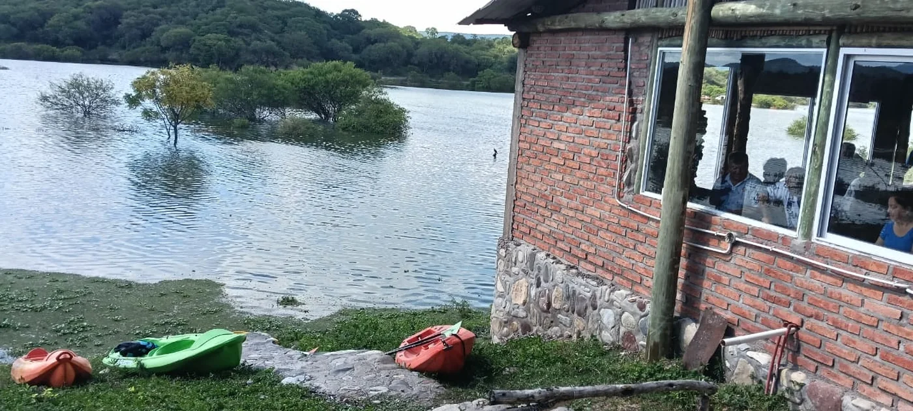
Ideal para escapadas de fin de semana, vacaciones familiares y grupos que quieren naturaleza sin resignar comodidad.
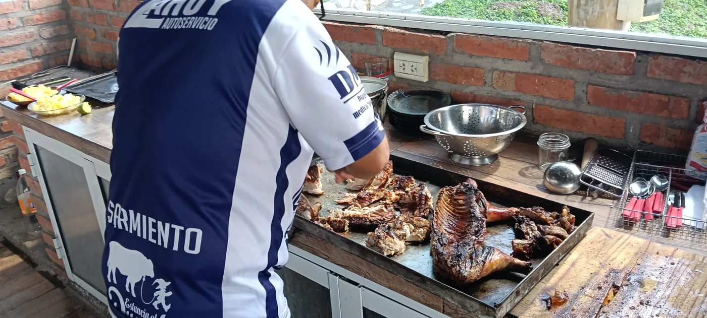
El corazón de la casa: espacio amplio para cocinar, comer, conversar y disfrutar sin apuro.
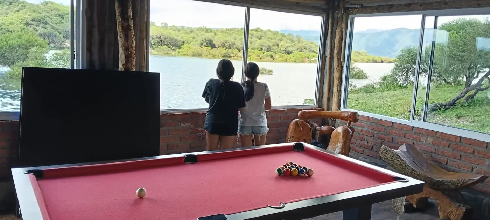
Pool, metegol, ping pong, TV y espacios al aire libre para que el grupo tenga siempre algo para hacer.
Imágenes del predio, la casa, el quincho, dormitorios, pileta, asadores y el entorno natural del Dique Cabra Corral.
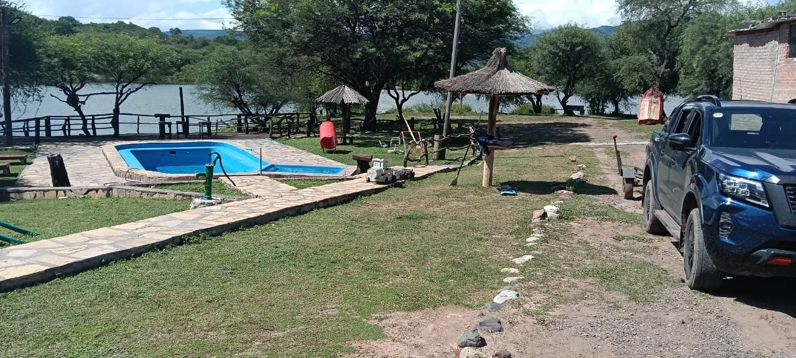
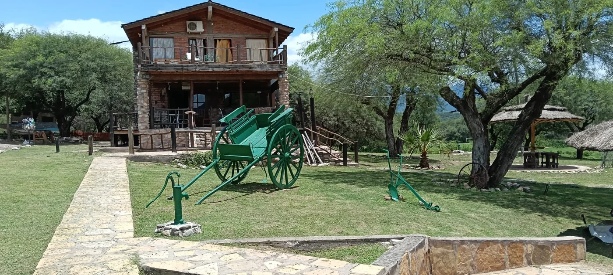
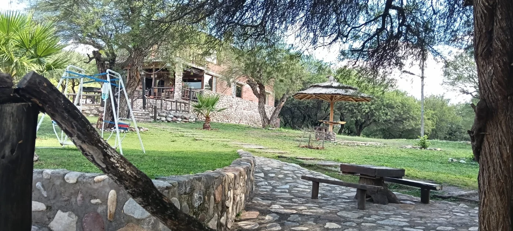
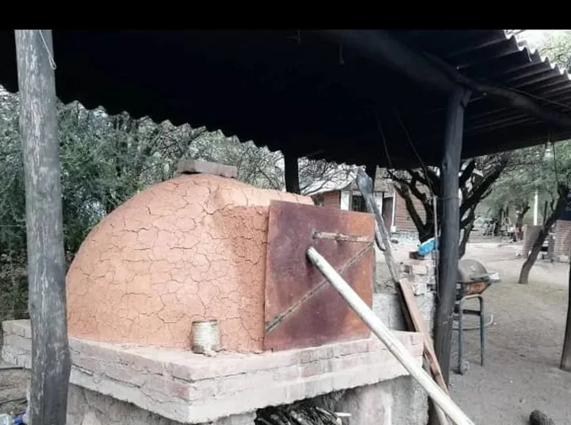
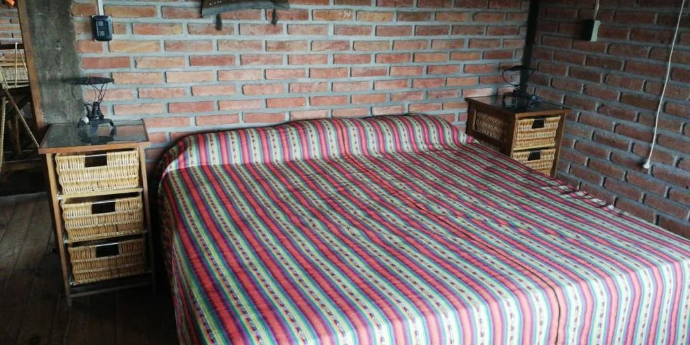
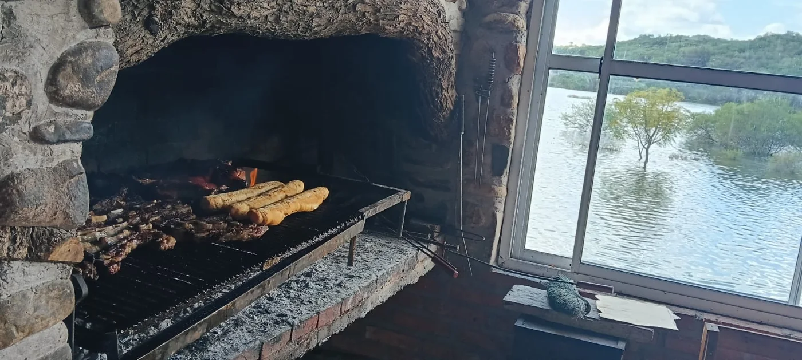
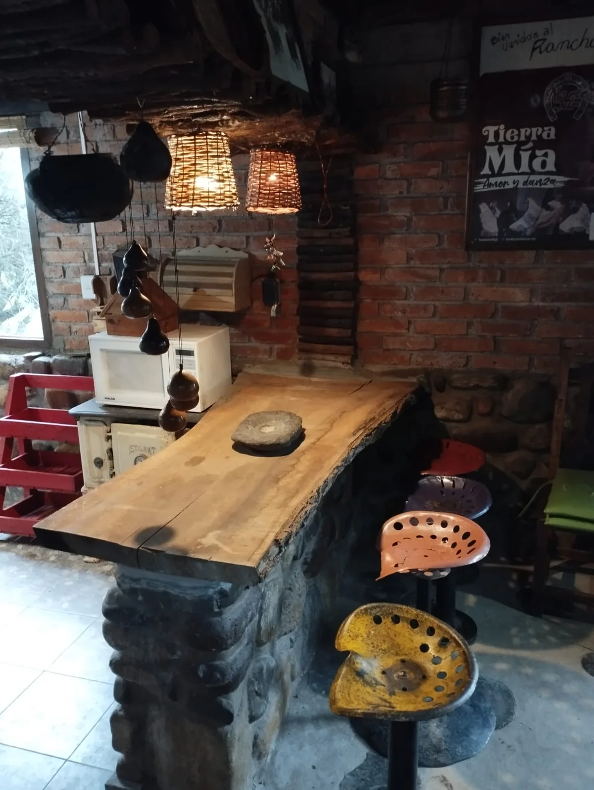
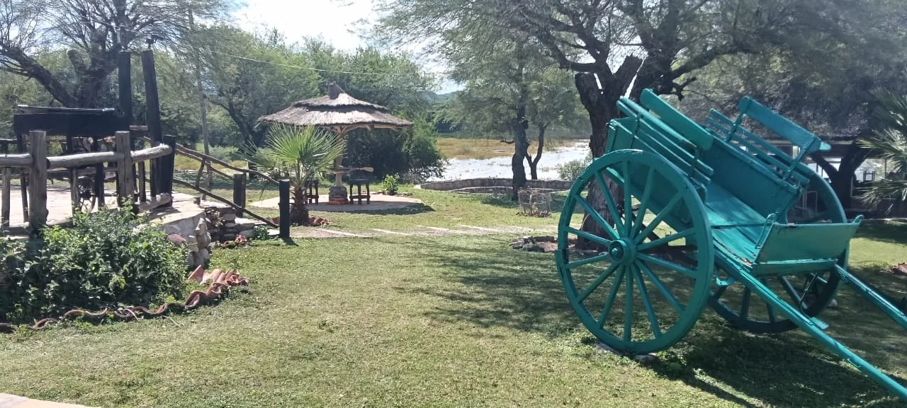
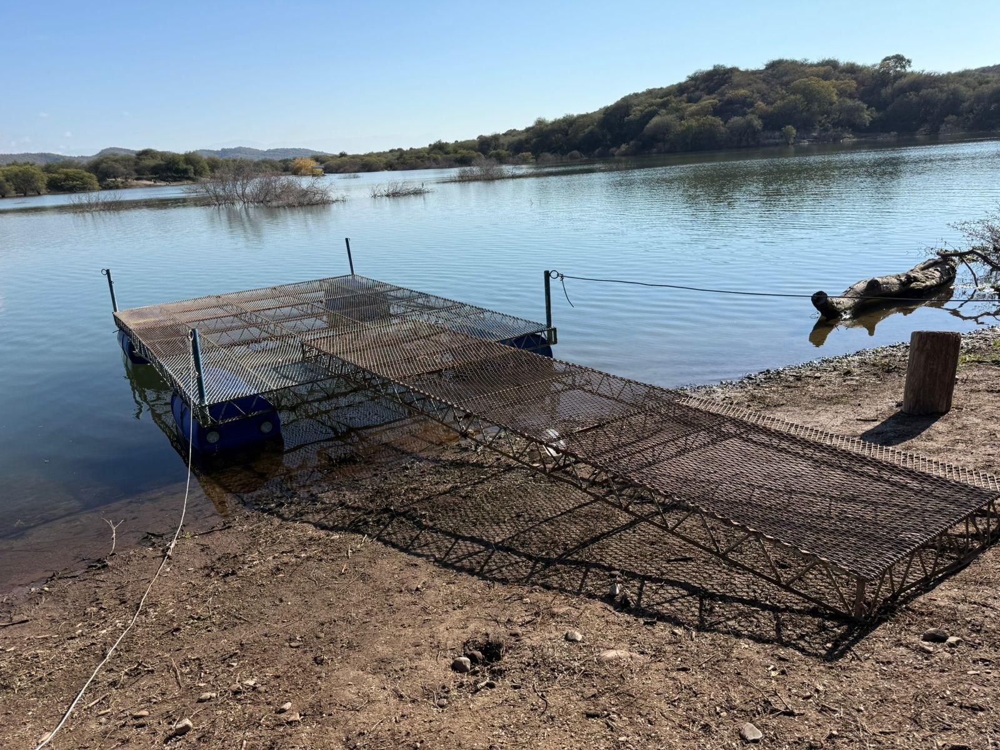
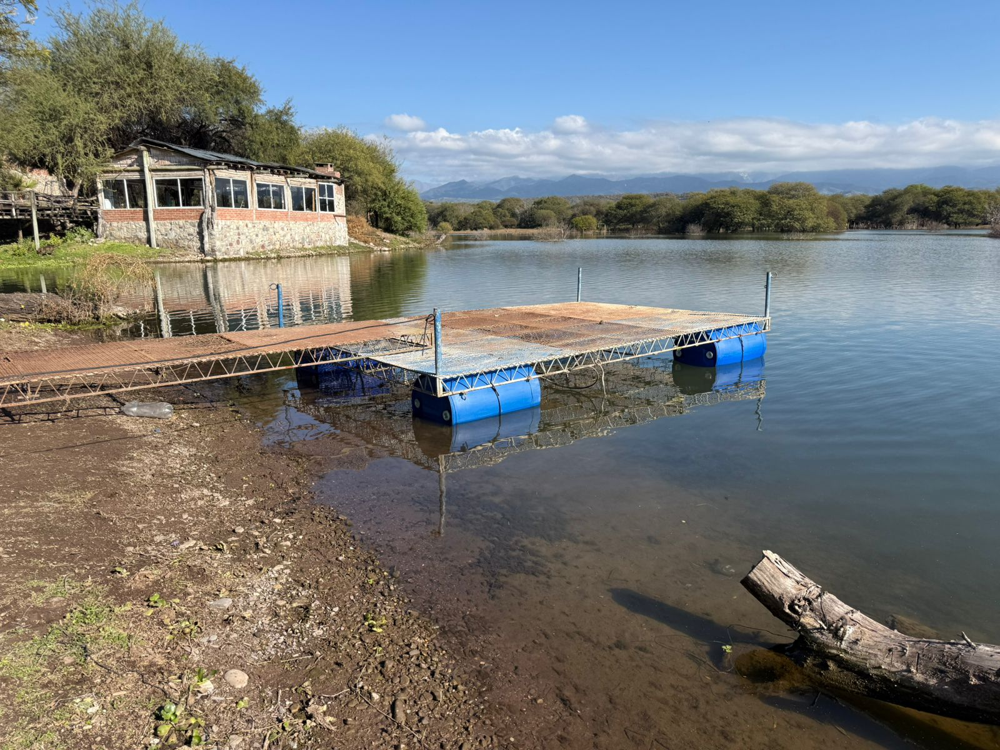
Mirá el recorrido del predio y la casa para imaginar mejor la experiencia antes de consultar disponibilidad.
Rancho Quilla está pensado para quienes buscan una casa o cabaña en Cabra Corral con privacidad, pileta y contacto directo con el paisaje del dique.
Respuestas claras sobre privacidad, capacidad, equipamiento, mascotas y horarios para que consultes con toda la información necesaria.
Sí. Rancho Quilla no se comparte con otros huéspedes: el quincho, la pileta, el patio, los asadores y los espacios comunes son exclusivos para el grupo que reserva.
La capacidad es para hasta 12 personas. Es ideal para familias, grupos de amigos y escapadas de fin de semana en Dique Cabra Corral.
Incluye ropa de cama, cocina equipada, heladera, freezer, utensilios, TV 50 pulgadas con DIRECTV, metegol, pool, ping pong, pileta, piletín, asadores, horno de barro y kayaks o bote doble.
Por higiene, los huéspedes deben llevar toallas y papel higiénico. El resto del equipamiento general está preparado para una estadía cómoda.
Sí, las mascotas son bienvenidas. Conviene avisar al consultar disponibilidad para coordinar una estadía segura y cómoda.
El ingreso es a las 12:00 del mediodía y la salida a las 11:00 del día siguiente, salvo coordinación previa.
Decime cuántas personas son y qué fechas tienen pensadas. La respuesta ideal es rápida, clara y directa para cerrar la reserva sin complicaciones.